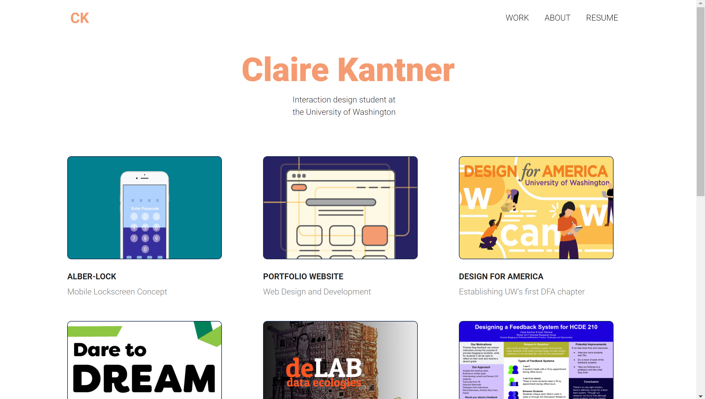

Jan 2018 - Ongoing
Demonstrate my expertise as a designer, through a fully customizable and reliable platform.
After spending hours trying to use a website service to create my portfolio, there was a glitch and suddenly, those hours disappeared and I lost everything! Feeling betrayed, I decided coding my own website might be a more reliable route. Thanks to Github Pages and their Student Developer Pack, I can have full control over both design and development of my personal website.
Also, I'm interested in becoming a UX designer, but I would also like to see what it's like from a developer standpoint, as I will likely be working with coders who will implement my designs. Stepping into the role of both designer and developer has not been easy, but every day, I allot a bit of time to practice HTML, CSS, and Bootstrap.
I am a big fan of using the "inspect" tool as well, so when I'm visiting a website I am inspired by, I will see exactly what their CSS and HTML looks like to achieve similar results.
Lastly, inspiration is a way that I keep myself motivated to work on my website. Seeing successful website design drives me to not only continue learning to code, but also keeps me excited about experts impletment the latest UX trends. Awwwards and CSS Design Awards are my go-to's for inspiration.
Version 1 (Should have gone easy on the drop shadows!)
Current version
For qualitative research, I am constantly seeking feedback from my peers, professors, and friends. Some helpful insights I have gathered through these conversations include:
For quantitative research, I have been using Google Analytics to see site behavior. Though I am still learning how it works, I am hoping to analyze and transform findings from click data into a more user-friendly website design.
By placing a thin boarder around each card on the homepage, I establish a cleaner, more unified look for the cards with various colors and projects.
By default, hyperlinks will simply underline the text to indicate clickability, but I used a highlighting roll-over animation for each portfolio piece. This further adds to the overall theme of my website.
Sample overview card with important information
Additionally, to make the project pages quicker to digest, I included overview cards at the top of each page with important contextual information. (Timeline, Task, Toolbox, and sometimes Team).
Lastly, I have decreased the average line length for the bodycopy for each paragraph. To create a comfortable reading experience, I shoot for about 8 - 12 words per line.
It's been difficult, but the more I practice, the more I see web design as an expression of creativity, and a medium for creating whatever your heart desires.
My goal for this personal project are:
This is an ongoing project, so stay tuned to see this website evolve!